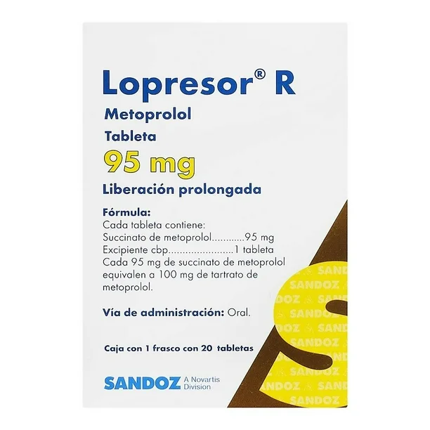
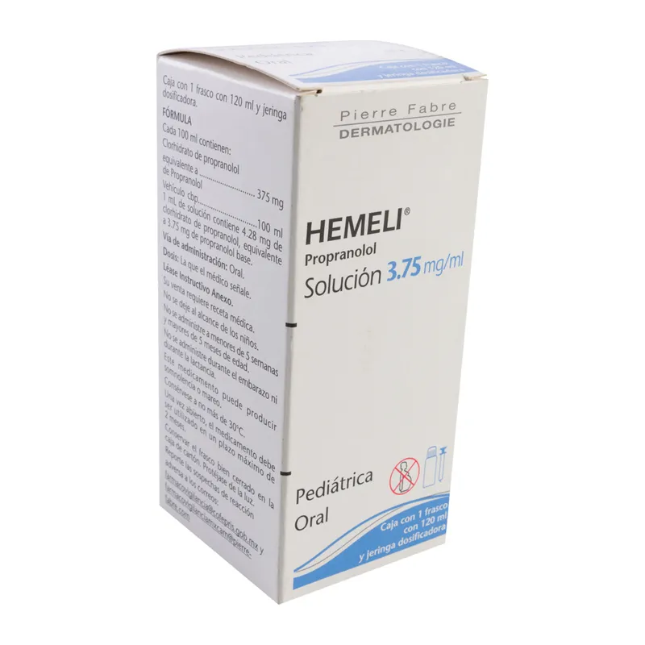
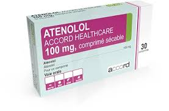

Bloqueo de Receptores Beta: Los betabloqueadores se unen a los receptores beta-adrenérgicos, impidiendo que las catecolaminas se unan a estos receptores. Existen tres subtipos principales de receptores beta: β1, β2 y β3. Los receptores β1 se encuentran principalmente en el corazón, mientras que los β2 están en los pulmones y vasos sanguíneos, y los β3 en el tejido adiposo
Efectos Cardiovasculares:
Reducción de la Frecuencia Cardíaca: Al bloquear los receptores β1 en el corazón, los betabloqueadores disminuyen la frecuencia cardíaca y la contractilidad del miocardio, lo que reduce la demanda de oxígeno del corazón
Disminución de la Presión Arterial: La reducción de la frecuencia cardíaca y la contractilidad también contribuye a una disminución de la presión arterial
Efectos en el Sistema Nervioso Central: Algunos betabloqueadores pueden cruzar la barrera hematoencefálica y ejercer efectos en el sistema nervioso central, como la reducción de la ansiedad y la prevención de migrañas.
Efectos Metabólicos: Los betabloqueadores pueden afectar el metabolismo de la glucosa y los lípidos, lo que puede ser relevante en pacientes con diabetes o dislipidemia.
Bloqueadores α-adrenérgicos: Inhiben los receptores adrenérgicos α1 o α2, reduciendo la actividad del sistema nervioso simpático y provocando disminución de presión arterial y mejora el flujo urinario.
Hipertensión arterial con cardiopatía isquémica.Insuficiencia cardíaca crónica (reduciendo la carga cardíaca). Taquiarritmias como fibrilación auricular. Hipertensión con migraña o ansiedad (Propranolol). cardiopatía isquémica y arritmias supraventriculares. Se divide en: No selectivos (bloquean β1 y β2) → Propranolol, Nadolol, Timolol. Selectivos β1 (cardioselectivos) →Metoprolol, Atenolol, Bisoprolol, Nebivolol. Mixtos (bloquean β y α1) →Carvedilol, Labetalol.
Asma y EPOC: Los betabloqueadores pueden causar broncoconstricción, lo que es peligroso para pacientes con asma o enfermedad pulmonar obstructiva crónica (EPOC)
Bradicardia: Contraindicados en pacientes con frecuencia cardíaca extremadamente baja
Bloqueo Auriculoventricular (AV) de Segundo o Tercer Grado: Pueden empeorar los bloqueos cardíacos existentes
Insuficiencia Cardíaca Descompensada: Insuficiencia Cardíaca Descompensada: No se deben usar en pacientes con insuficiencia cardíaca aguda descompensada
Diabetes: Diabetes:Pueden enmascarar los síntomas de hipoglucemia, lo que es problemático en pacientes diabéticos
Tabletas/vía oral
Metoprolol
En la hipertensión, generalmente basta 1 tableta de 100 mg por la mañana. En caso necesario puede aumentarse a 2 tabletas al día. Si no se logra un control satisfactorio de la presión arterial con esta dosis, se recomienda combinarlo con un diurético o un vasodilatador. En la angina de pecho, la dosis recomendada es de 1 tableta cada 12 horas. En las arritmias, la dosis recomendada es de 1 a 2 tabletas dividida en 2 tomas. Si no se obtiene un control adecuado de la condición clínica, puede aumentarse a 3 tabletas de 100 mg al día.
Atenolol
Hipertensión: Dosis única de 50 a 100 mg/día, administrada por vía oral. El efecto estará totalmente establecido después de una a dos semanas. Angina: La mayoría de los pacientes con angina de pecho responderán a 100 mg/día, administrados por vía oral en una sola dosis o 50 mg/día administrados dos veces al día. Arritmias: Una dosis oral adecuada de mantenimiento es de 50 a 100 mg/día, como dosis única. Infarto del miocardio: Intervención tardía después del infarto agudo del miocardio.En pacientes que se presenten algunos días después de sufrir un infarto agudo del miocardio, se recomienda una dosis oral de atenolol de 100 mg/día, como profilaxis a largo plazo del infarto del miocardio. Infarto al miocardio: Intervención tardía después del infarto agudo del miocardio. En pacientes que se presenten algunos días después de sufrir un infarto agudo del miocardio, se recomienda una dosis oral de 100 mg/día como profilaxis a largo plazo del infarto al miocardio. En situaciones de administrar este medicamento en pacientes de edad avanzada, se puede reducir la dosis, especialmente en aquellos pacientes con función renal alterada. Debido a que no se cuenta con experiencia en la administración en niños no se recomienda su administración. Atenolol se excreta por vía renal, por lo que se debe ajustar la dosis en casos de deterioro grave de la función renal
Metoprolol (Marca LENOPRES) Bisoprolol (Marca BICONCOR) Atenolol (Marca ATCORD) Carvedilol (Marca BLOQADRE) Propranolol (Marca HEMELI)
Efectos potenciados (más riesgo de bradicardia e hipotensión):
Se ha informado de efectos secundarios en las esferas del sistema nervioso central (cefalea, insomnio, astenia, síntomas depresivos y sueños vividos), del aparato gastrointestinal (náuseas, pirosis y vómito), del aparato respiratorio (broncospasmos), del sistema cardiovascular (bradicardia acentuada, hipotensión arterial y disminución del gasto cardiaco) y rara vez rash cutáneo. En términos generales las reacciones son poco numerosas, no son graves y desaparecen al suspender la medicación. En casos en que deba suspenderse sobre todo en pacientes isquémicos, debe hacerse gradualmente a lo largo de una semana, por el riesgo de producirse con la interrupción brusca un agravamiento de la isquemia miocárdica.
PRECAUCIONES EN RELACIÓN CON EFECTOS DE CARCINOGÉNESIS, MUTAGÉNESIS, TERATOGÉNESIS Y SOBRE LA FERTILIDAD: No produce carcinogénesis o mutagénesis.